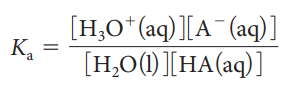

An acid is a substance that dissociates in water to produce one or more hydrogen ions
ACID: HCl(aq) → H+(aq) + Cl-(aq)
ACID: H2SO4(aq) → H+(aq) + HSO4-(aq)
A base is a substance that dissociates in water to form one or more hydroxide ions
BASE: KOH(aq) → K+(aq) + OH-(aq)
This theory is LIMITED because:
It allows for only one-of-a-kind base – compounds containing the HYDROXIDE ION
It assumes that all acid-base reactions occur in AQUEOUS solutions.
An acid is a substance that can DONATE a proton (H+ ion)
A base is a substance that can ACCEPT a proton (H+ ion) from an acid
An acid-base reaction involves the TRANSFER of a proton
HCl(aq)+ H2O(l) → H3O+(aq) + Cl-(aq)
Conjugate Acid-Base Pairs
A conjugate base is a substance that forms when an acid LOSES a hydrogen ion (proton)
A conjugate acid is a substance that forms when a base ACCEPTS a hydrogen ion (proton)
HA(aq) + H2O(l) → A-(aq) + H3O+ (aq)
Callout
Amphoteric Substances
A substance that is ABLE TO DONATE OR ACCEPT a hydrogen ion (proton) and thus act as Brønsted-Lowry acid and a Brønsted-Lowry base
HCO3-(aq) + H2O(l) → H2CO3(aq) + OH-(aq)
HCO3-(aq) + H2O(l) → CO32-(aq) + H3O+(aq)
The Acid Ionization Constant, Ka
- the equilibrium constant for the ionization of an acid
- also called the acid dissociation constant
Ka is used for reactions in which an acid, HA(aq), reacts with water to form a conjugate base, A- (aq)
